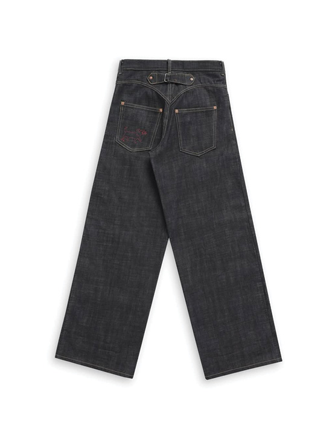
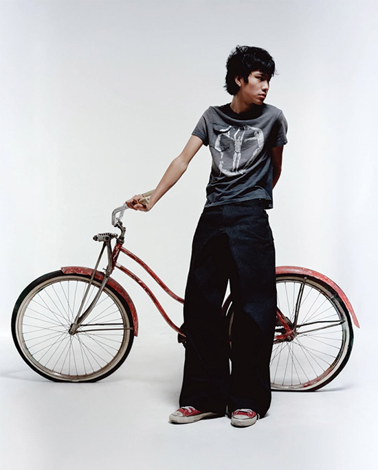
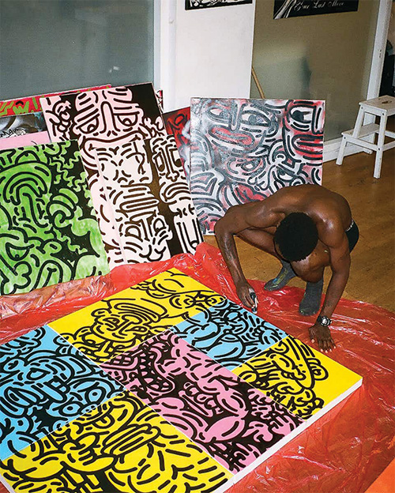
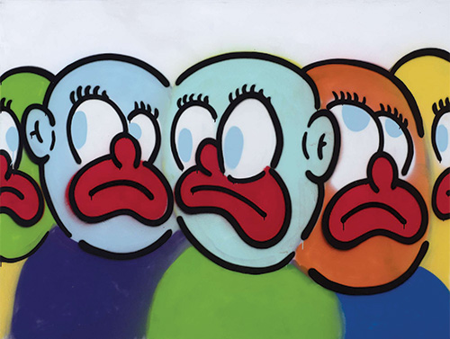
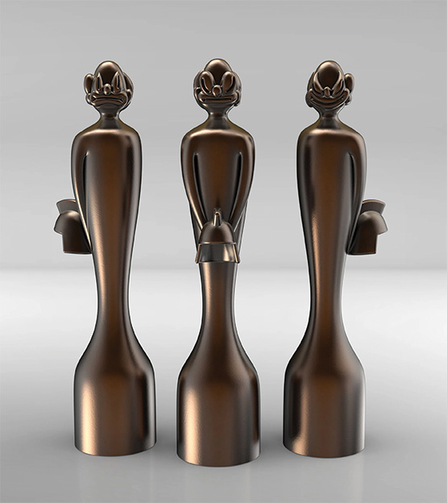
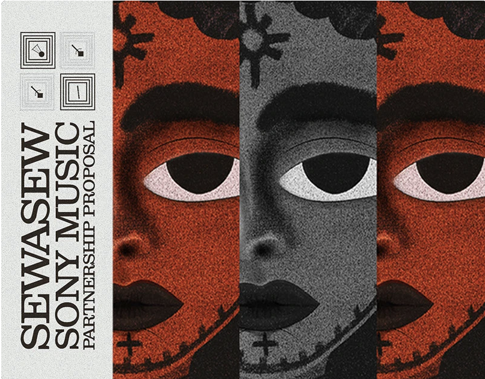
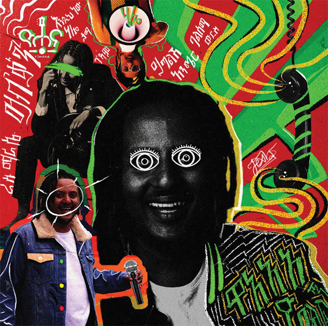
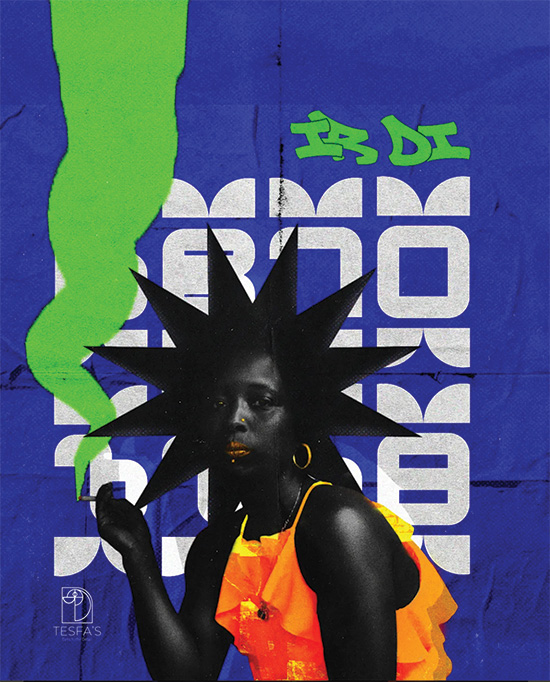

One of the brands that I’ve
been recently obsessed with is called Yuremane. Nik, the founder of
the brand, has a large following on social media and has built a
reputation for the brand's beautifully crafted selvedge jeans.
His brand is built off the importance of thoughtfulness and
craftsmanship and I admire that. I think those are very important
pillars to build a clothing brand on in today's society where
overconsumption and fast fashion is running rampant.



One of my favorite creatives that I draw inspiration from is an artist
that goes by the name Slawn. He’s a Nigerian born, UK raised
designer and artist that oftentimes, faces a lot of controversy
surrounding his art. What keeps me interested in his work is his
ability to work with all kinds of mediums. He has done works on
cars to painting other humans and while his art style is very
different from my own, I can still admire his skill and
creativity.



The last creative is a graphic designer whose work I found on
Behance. His name is Tesfa GebreMariyam and he is based in the
country that I'm from, Ethiopia. His work is totally mesmerizing.
He uses bright, contrasting colors to evoke certain emotions while
also incorporating traditional Ethiopian art styles into his designs
and patterns.